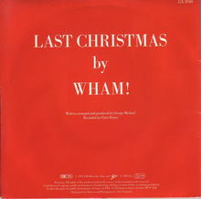

by Wham

Lyrics
Last Christmas I gave you my heart
But the very next day you gave it away
This year, to save me from tears
I'll give it to someone special
Last Christmas I gave you my heart
But the very next day you gave it away
This year, to save me from tears
I'll give it to someone special
Once bitten and twice shy
I keep my distance, but you still catch my eye
Tell me baby, do you recognize me?
Well, it's been a year, it doesn't surprise me
Happy Christmas, I wrapped it up and sent it
With a note saying "I love you", I meant it
Now I know what a fool I've been
But if you kissed me now, I know you'd fool me again
Last Christmas I gave you my heart
But the very next day you gave it away
This year, to save me from tears
I'll give it to someone special
Last Christmas I gave you my heart
But the very next day you gave it away
This year, to save me from tears
I'll give it to someone special
Ooh, oh, oh, baby
A crowded room, friends with tired eyes
I'm hiding from you and your soul of ice
My God, I thought you were someone to rely on
Me? I guess I was a shoulder to cry on
A face on a lover with a fire in his heart
A man under cover, but you tore me apart
Oh, oh now I've found a real love
You'll never fool me again
Last Christmas I gave you my heart
But the very next day you gave it away
This year, to save me from tears
I'll give it to someone special, special
Last Christmas I gave you my heart
But the very next day you gave it away
This year, to save me from tears
I'll give it to someone special
A face on a lover with a fire in his heart (I gave you mine)
A man under cover but you tore him apart
Maybe next year I'll give it to someone
I'll give it to someone special